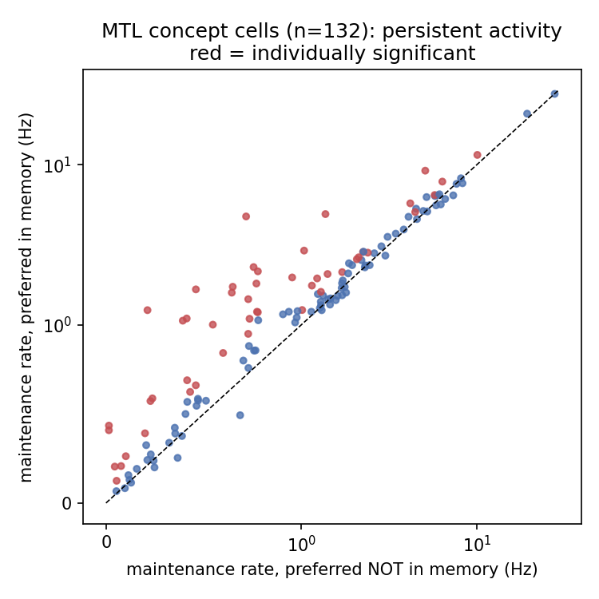
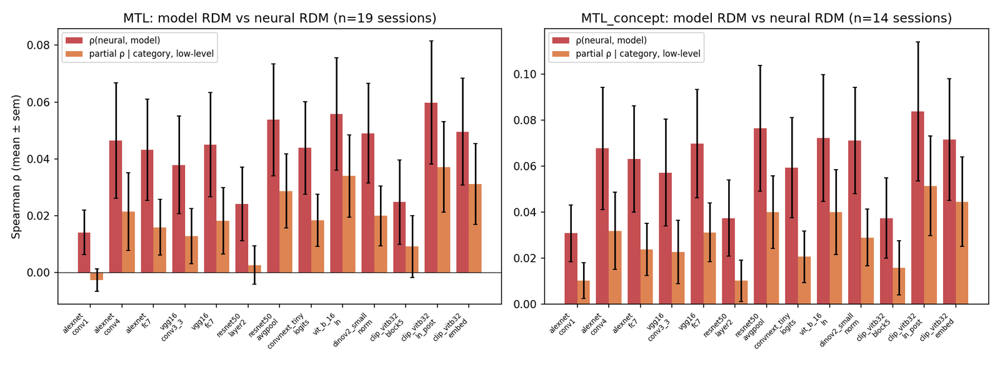
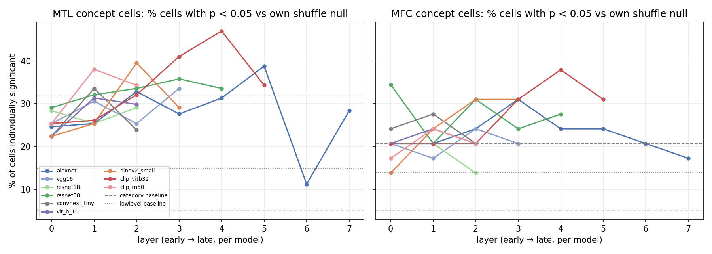
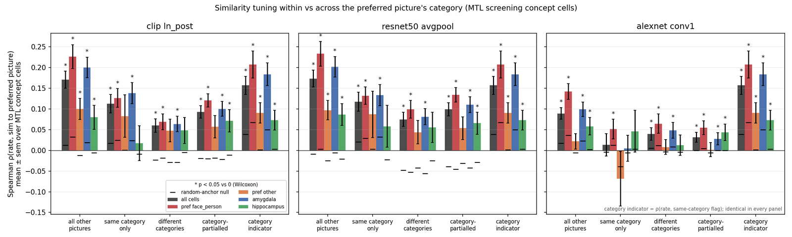
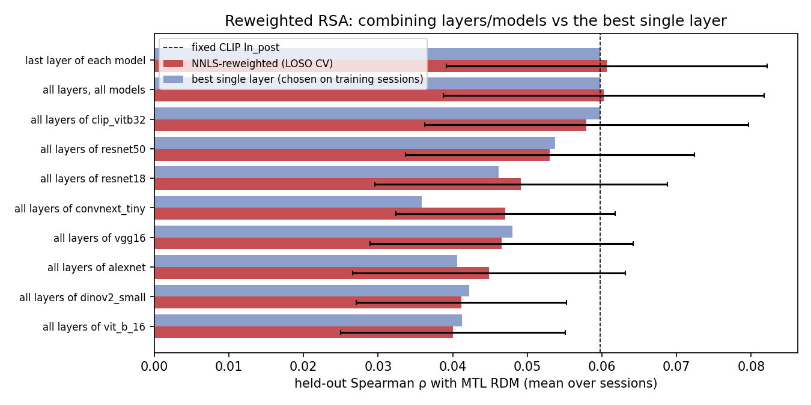

Abstract
Concept cells in the human medial temporal lobe (MTL) respond selectively to particular people, animals and places. We ask which properties of a picture, and which representational spaces, account for that selectivity, using the 41 NWB files of DANDI 000469: 1809 single units (amygdala, hippocampus, dorsal anterior cingulate, pre-supplementary motor area, ventromedial prefrontal cortex) from 21 patients who viewed 54–63 pictures in a screening task and then held five of them in working memory (Sternberg task). The 342 unique pictures were labelled (CLIP zero-shot with 40 hand corrections; two-rater fame/identity labels, κ = 0.93; MTCNN faces) and passed through twelve networks (AlexNet, VGG-16, ResNet-18/50, ConvNeXt-T, ViT-B/16, DINOv2-S/B, CLIP ViT-B/32, ViT-L/14 and RN50, VGGFace2). We replicate the published unit counts, behaviour and concept-cell fractions (screening MTL 31.8 %; MFC 6.0 %). Representational similarity between session-wise MTL population RDMs and layer RDMs rises from early to late layers in every architecture (per-session Spearman ρ ≈ 0.06 at the last layers, median 0.034; 0.13 after pooling sessions across patients; ≈ 0.24 of the split-half ceiling; within-session label permutation z ≈ 10–11); the MFC correspondence is weak (ρ ≈ 0.015) and without a depth gradient. The correspondence emerges ~200 ms after picture onset and peaks at 350 ms. Late-layer RDMs and a category RDM are largely redundant, late layers adding a small unique component (partial ρ 0.03–0.04). At the single-neuron level the response of a concept cell to the pictures it does not prefer scales with their late-layer similarity to its preferred picture (cell-pooled ρ = 0.17, patient-mean 0.10, p = 0.016 over 16 patients), increases with depth (mixed-model z = 14), survives within category (0.11) and text-space similarity, and is strongest in the right amygdala. Neither architecture, training objective (CLIP-RN50 vs ImageNet-RN50), scale (ViT-B → L, DINOv2-S → B) nor cross-validated layer reweighting changes the correspondence. Conversely, no picture-level property predicts which pictures a given patient's neurons select (52 contrasts, family-wide q ≥ 0.29; other patients' preferences: leave-one-subject-out AUC 0.44–0.49), and picture similarity does not reliably affect working-memory behaviour.

1Data and stimulus set
DANDI 000469 (9.8 GB, 41 NWB files) was read over HTTP with remfile/h5py; only stimulus/templates, stimulus/presentation, intervals/trials, units and the electrode table were materialised. Two format details matter for reuse: templates are stored rotated (400 × 300 × 3; np.rot90(k = −1) restores the 300 × 400 upright picture), and StimulusPresentation/data indexes templates positionally in Sternberg files but as image number − 1 in screening files (numbers 10, 20, … are unused).
The 1341 stored templates reduce to 342 unique pictures (SHA-1 exact match, then difference-hash Hamming ≤ 6/64; 3 near-duplicates), one picture appearing in up to 16 patients' screening sets. Every Sternberg memorandum of the 20 patients with a screening session is one of that patient's screening pictures. Corrected category labels (CLIP ViT-B/32 zero-shot over nine prompt-ensembled classes, then 40 hand corrections after inspection of every per-category contact sheet): face/person 119, animal 54, landmark/place 37, vehicle 34, nature 23, object 22, scene with people 21, food 16, cartoon/artwork 16. Two independent raters labelled fame and identity (blind 120-picture subset: κ = 0.93, identity agreement 41/42); 113 of the 150 pictures containing a person show a famous person, i.e. the person pictures are ~all celebrities. MTCNN (p ≥ 0.9) detects a face in 41 % of pictures.
| Area | Screening units | Sternberg units | Concept cells, paper criterion | Concept cells, strict |
|---|---|---|---|---|
| Amygdala | 262 | 259 | 101 (38.5 %) | 50 (19.1 %) |
| Hippocampus | 159 | 190 | 33 (20.8 %) | 17 (10.7 %) |
| dACC | 221 | 171 | 15 (6.8 %) | 4 (1.8 %) |
| pre-SMA | 236 | 250 | 11 (4.7 %) | 3 (1.3 %) |
| vmPFC | 29 | 32 | 3 (10.3 %) | 3 (10.3 %) |
| MTL / MFC | 421 / 486 | 449 / 453 | 134 (31.8 %) / 29 (6.0 %) | 67 (15.9 %) / 10 (2.1 %) |

image_uid); category composition per patient is tabulated in results/tables/A1_category_by_subject.csv.2Methods
2.1Neural responses and concept-cell criteria
For each presentation the firing rate was counted in [200, 1000) ms after onset (the published window). Screening sessions present each of 54–63 pictures six times; Sternberg analyses use all encoding presentations (enc1–3), probes excluded, unless stated. A unit is a concept cell if (i) a one-way ANOVA over picture identity is significant against 1000 label permutations (p < 0.05) and (ii) a Welch t-test of the maximum-response picture against all others is significant against a permutation null (p < 0.05); units with < 50 spikes are excluded. In the paper-style version of (ii) the observed t is compared with the t of a random picture-sized subset under permutation. Because the maximum is selected before testing, that null is permissive: on synthetic null units it passes 67 % of the time and adds nothing to the ANOVA, so the paper-style criterion is effectively ANOVA p < 0.05 and the MFC prevalence (6.0 %) equals the nominal false-positive rate. A strict version compares the observed t with the distribution of the maximum-over-pictures t under each permutation (6 % of null units pass); both criteria are carried through the analyses. Selectivity indices: depth of selectivity (Rainer & Miller), Treves–Rolls sparseness. Maintenance activity: 0–2.5 s after maintenance onset, correct trials, preferred picture in vs not in the memory set.
2.2Vision models and image descriptors
Torchvision ImageNet-1k weights: AlexNet, VGG-16, ResNet-18/50, ConvNeXt-T, ViT-B/16; timm: DINOv2 ViT-S/14 and ViT-B/14 (self-supervised); open_clip OpenAI weights: CLIP ViT-B/32, ViT-L/14 and RN50; facenet-pytorch: InceptionResnetV1 (VGGFace2) on the largest MTCNN crop. Forward hooks on 5–8 layers per model; per layer we keep the spatial/token mean (gap), the class token (cls) and a fixed sparse random projection of the spatially capped activation to 2048 dimensions (rp). Baselines: category one-hot / category RDM; thirteen low-level statistics (luminance, RMS and Michelson contrast, colourfulness, saturation, hue and grey entropy, edge density, spectral slope, high-frequency energy, edge centre of mass); CLIP text-tower embeddings of per-picture descriptions (identity or fine label) for a semantic space.
2.3Representational similarity analysis
For session s the neural RDM Ds is the correlation distance between pictures over z-scored unit responses (units × pictures mean-rate matrix); model RDMs are correlation distances over layer features restricted to the same pictures. Similarity is Spearman ρ over the upper triangle. Group inference treats sessions as random effects (t on Fisher-z; also mixed models with subject random intercepts and slopes) and, separately, uses a within-session picture-identity permutation of the model RDM (1000×; fixed-effects null). Reliability: ten random 3 + 3 splits of the six repetitions, Spearman–Brown corrected; ceiling-normalised ρ is reported as the ratio of means. Partial Spearman ρ residualises ranked upper triangles on control RDMs; rank RDM regressions and a commonality analysis decompose variance among CLIP, ResNet-50 and category RDMs. A pooled RDM rank-normalises each session's RDM and averages over the co-shown pairs (6886 pairs with coverage ≥ 2). Time-resolved RSA uses 200-ms windows stepped by 25 ms; window robustness uses 100–600, 300–800, 200–500 and 500–1000 ms.
2.4Single-neuron analyses
Similarity tuning. For a concept cell with preferred picture p, ρsim = Spearman(rate on picture i, cos(fi, fp)) over the non-preferred pictures i ≠ p, with features centred over the picture pool and L2-normalised. Null: the same statistic anchored on random non-preferred pictures (20 anchors; preferred and anchor excluded). Variants restrict i to the same category as p, to different categories, or residualise ranks on a same-category indicator; a text-space variant replaces f by CLIP text embeddings, with partial correlations in both directions. Time-resolved: 100-ms windows stepped by 25 ms. Encoding models. Six-fold cross-validated ridge (in-fold z-scoring and PCA to 20 components; penalty by leave-one-out GCV) from layer features to the per-picture mean rate; because CV Pearson r is negatively biased for signal-free targets with ~60 samples, each cell × predictor also receives a picture-label-shuffle null (100 shuffles for six core predictors, 30–40 for 36 further layers), and the primary metric is the fraction of cells with p < 0.05 against their own null. Time-resolved encoding uses each cell's pre-stimulus windows as the bias baseline.
2.5Statistics
Two-sided tests unless stated; permutation p = (k + 1)/(n + 1); Benjamini–Hochberg FDR within each family and, for the memoranda contrasts, family-wide over all 52 contrasts. Cells are nested in patients (two patients contribute 42 % of MTL concept cells), so every cell-pooled statistic is accompanied by the per-patient mean with a Wilcoxon test over patients and by an OLS with cluster-robust (patient) standard errors (A8_cluster_robust.csv). An independent adversarial review of the analysis code and numbers is published with the repository (docs/review_2026-08-15.md) together with the changes it produced.
3Results
3.1Replication
Unit counts per area match the source publication exactly (Table 1). Behaviour: 88.7 % correct (published 88.73 %); median RT 1.04 / 1.12 / 1.21 s for loads 1–3. Concept-cell fractions in screening: MTL 31.8 % (published 32.8 %), MFC 6.0 % (5.4 %); Sternberg with the published encoding-1-only rule: MTL 22.7 % (20.9 %), MFC 5.7 % (6.7 %). MTL concept cells fire more during maintenance when their preferred picture is in the memory set (2.58 vs 2.21 Hz, paired one-sided p = 7 × 10−9; 36 % individually significant vs 45 % published; amygdala p = 2 × 10−7, hippocampus p = 3 × 10−3); MFC cells do not (p = 0.28). At the probe, the preferred picture evokes a weaker response when it was held in memory than as a novel lure (4.08 vs 4.39 Hz, Wilcoxon p = 4 × 10−4).
{kind=link}

3.2Picture-level predictors of the memoranda
The five memoranda per patient were selected online by the original experimenters from the neurons' screening responses. Comparing memoranda with the remaining pictures of the same patient's screening set over 52 contrasts (category enrichment by Fisher's exact test; CLIP attributes, low-level statistics, DNN-space centroid distance, nearest-neighbour distance and category typicality in four feature spaces, cross-patient reuse, and face descriptors by Mann–Whitney AUC pooled and within subject), nothing survives family-wide FDR (all q ≥ 0.29). The only nominal effect is a detected face (62 % vs 49 %; within-subject AUC 0.569 ± 0.025, t19 p = 0.01; block-wise q = 0.02), which is the expected downstream of the concept cells' face preference (§3.3). Category enrichment: face/person OR 1.43 (p = 0.09), all others n.s. Our replicated selectivity separates memoranda within a patient (AUC 0.67–0.71), which is circular by construction; across patients, a leave-one-subject-out logistic classifier on CLIP, ResNet-50, DINOv2 or AlexNet features, category, low-level statistics, faces, or other patients' concept-cell preferences predicts a held-out patient's preferred pictures at AUC 0.44–0.49, and a picture that was a memorandum for other patients is not more likely to be one here (AUC 0.54).

3.3What concept cells prefer
Relative to the composition of pictures each cell was shown, MTL concept cells' preferred pictures contain a detected face more often (66 % vs 53 %, cell-pooled). Because cells are nested in patients this holds at patient level for strict amygdala concept cells (excess +28 points, Wilcoxon over 11 patients p = 0.03; cluster-robust p < 10−4) but not for the permissive criterion (p = 0.67). Fame adds nothing beyond personhood: among person pictures 94 % of preferred and 92 % of shown are famous (n.s.). Pictures containing text or logos are under-preferred (q = 0.007). Per shown picture, animals recruit 0.19 concept cells per patient, faces 0.14, vehicles 0.09, nature 0.06, landmarks 0.06, food 0.03, objects 0.01; with the strict criterion the amygdala recruits 3.8 × more cells per animate than inanimate picture (Wilcoxon over 11 patients p = 0.023). Right-amygdala concept cells prefer animals more often than left (13/63 vs 2/38, one pre-specified cell-level Fisher test p = 0.044; strict 6/32 vs 0/18, p = 0.075), consistent with Mormann et al. (2011). Overall population drive per picture is category-structured (Kruskal–Wallis p = 6 × 10−4; people highest, food and objects lowest); its correlation with DNN-space centrality (ρ = −0.28) is carried by category. Category is decodable from single-trial MTL populations (leave-one-picture-out multinomial logistic regression, +4.5 % over chance, p = 0.015; hippocampus and MFC at chance).


3.4Population geometry
Per-session MTL RDMs correlate with the late layers of every network (Fig. 1; Table 2): CLIP ViT-B/32 ln_post 0.061 ± 0.023, ResNet-50 avgpool 0.058 ± 0.021, ViT-B/16 ln 0.058 ± 0.021 (t over 18 sessions p = 0.01–0.02; positive in 78–94 % of sessions), against 0.055 for the category RDM and 0.014 for low-level statistics. Concept-cell populations reach 0.086 (CLIP; strict populations 0.069, n = 9). Split-half reliability of an MTL RDM is 0.06 (median 0.033), so the ceiling-normalised correspondence is ≈ 0.24. Pooling sessions across patients raises the correspondence to ρ = 0.129 for CLIP block 11 (permutation p = 0.005; category 0.117; low-level 0.014). Under the within-session label-permutation null, MTL vs late layers gives z = 9–11 and MTL vs AlexNet conv1 z = 2.7. MFC ρ ≈ 0.015 is above zero under the same null (z ≈ 3) but has no depth gradient; the MTL − MFC contrast is decisive as a fixed effect (z ≈ 6) and marginal across patients (paired t p = 0.01–0.19 by layer; mixed model p = 0.06). Amygdala (0.05–0.06) exceeds hippocampus (0.014–0.018); the hippocampal RDM is barely categorical (0.008). Partialling out the category and low-level RDMs leaves CLIP ln_post at 0.037 (p = 0.03) and ResNet-50 avgpool at 0.029 (p = 0.04); commonality analysis assigns 0.57 % of MTL RDM variance to the component shared by CLIP, ResNet-50 and category, 0.39 % uniquely to CLIP, 0.20 % to ResNet-50 and 0.12 % to category. Restricted to within-category pairs, ViT-family late layers keep a correspondence (CLIP ln_post 0.052, p = 0.015; ImageNet ViT-B/16 ln 0.030, p = 0.016; ResNet-50 −0.006). Sliding-window RSA (Fig. 7) rises from ~200 ms, peaks at 350 ms (CLIP 0.071 ± 0.024, ResNet-50 0.066, category 0.060, conv1 0.030, low-level 0.023) and decays by ~500 ms; results are stable for any window that includes 200–500 ms. Cross-validated non-negative reweighting of all 51 layers of the eight networks (0.060) does not exceed the best single late layer (0.060). A hierarchical model (ρ ~ depth × region, subject random intercept and slope, 1887 observations) gives depth × MTL +0.022 (z = 4.1), depth within MTL +0.031 (z = 6.0) vs MFC +0.008 (n.s.); amygdala slope +0.029 (z = 6.9) vs hippocampus +0.008 (p = 0.08); at the last layer, region matters (MTL − MFC +0.037, z = 5.8) and model family (CNN vs transformer) does not (+0.0002).
| Model | MTL best layer | ρ (MTL) | p | MFC best layer | ρ (MFC) | p |
|---|---|---|---|---|---|---|
| AlexNet | conv4 | 0.052 ± 0.021 | 0.030 | conv5 | 0.017 ± 0.007 | 0.031 |
| VGG-16 | logits | 0.054 ± 0.017 | 0.007 | fc6 | 0.016 ± 0.006 | 0.016 |
| ResNet-18 | logits | 0.055 ± 0.019 | 0.011 | logits | 0.015 ± 0.007 | 0.041 |
| ResNet-50 | avgpool | 0.058 ± 0.021 | 0.013 | layer3 | 0.014 ± 0.007 | 0.059 |
| ConvNeXt-T | logits | 0.050 ± 0.016 | 0.008 | stage3 | 0.013 ± 0.005 | 0.031 |
| ViT-B/16 | ln | 0.058 ± 0.021 | 0.016 | ln | 0.015 ± 0.009 | 0.091 |
| DINOv2-S/14 | norm | 0.052 ± 0.018 | 0.013 | block8 | 0.014 ± 0.007 | 0.061 |
| CLIP ViT-B/32 | ln_post | 0.061 ± 0.023 | 0.019 | ln_post | 0.016 ± 0.008 | 0.062 |
| Category RDM | — | 0.055 ± 0.018 | 0.008 | — | 0.007 ± 0.007 | 0.31 |
| Low-level RDM | — | 0.014 ± 0.006 | 0.047 | — | 0.002 ± 0.003 | 0.51 |

{kind=link}

3.5Single-neuron generalisation along network similarity
Excluding each concept cell's preferred picture, its response to the remaining 53–62 pictures correlates with their similarity to the preferred picture in late layers: cell-pooled ρsim = 0.173 (ResNet-50 layer4; 77 % of the 134 MTL concept cells positive) and 0.170 (CLIP ln_post; 71 %), random-anchor null 0.009 and −0.010; per-patient mean 0.100 (Wilcoxon over 16 patients p = 0.016; cluster-robust p = 2 × 10−4); strict cells 0.120 (n = 67; patient mean 0.085, p = 0.02). ρsim increases with relative layer depth (0.056 per unit depth with subject, cell and model variance components, z = 14.3), and at late layers is +0.096 above non-selective MTL cells (z = 5.7). It emerges at ~225 ms and peaks at 325 ms (0.174), slightly before the raw preferred-vs-rest rate peak. It survives restriction to same-category pictures (CLIP 0.112, 68 % positive, null 0.017; ResNet-50 0.117; AlexNet conv1 0.013, n.s.) and category-partialling (0.093), and image-space similarity explains it beyond CLIP text-space similarity of picture descriptions (image | text 0.09–0.16, p < 10−4; text | image ≤ 0.07). It is larger for broadly tuned cells (depth of selectivity vs ρsim: −0.18 to −0.22) and face-preferring cells (0.22 vs 0.07), and larger in the right than the left amygdala (0.297 ± 0.032, n = 63 vs 0.039 ± 0.021, n = 38; per-patient means 0.212 vs 0.039, 9 vs 8 patients, Mann–Whitney p = 0.008; hemisphere is partly confounded with patient), an asymmetry carried by category-level tuning (within-category ρsim 0.133 vs 0.146). Whether face-preferring cells follow object-model similarity more than VGGFace2 identity similarity across other faces is not established (cell-level p = 0.03, patient-level p = 0.34). Encoding models: with a per-cell shuffle null, 47 % of MTL concept cells are individually predicted by CLIP ln_post, 40 % by DINOv2 block 8, 39 % by AlexNet fc6, 34 % by ResNet-50 avgpool, 32 % by a category one-hot and 15 % by low-level statistics (Fig. 11); time-resolved encoding models with a pre-stimulus baseline peak at 300 ms (CLIP 0.19 ± 0.03, category 0.21, conv1 0.12).


{kind=link}

{kind=link}

3.6Architecture, objective and scale
Ranked by their best layer, the eight networks are statistically close under RSA (1 of 28 paired contrasts nominal, CLIP > AlexNet p = 0.03), similarity tuning (ResNet-50 ≈ CLIP) and per-cell encoding significance. Holding architecture fixed, layer-matched ImageNet ResNet-50 and CLIP RN50 differ by −0.007…+0.002 in RSA (Wilcoxon p ≥ 0.24, 19 sessions) and by |Δ| ≤ 0.007 in ρsim (p ≥ 0.16, 134 cells). Depth-matched CLIP ViT-B/32 vs ViT-L/14 and DINOv2-S vs -B differ by |Δρ| ≤ 0.01 at the last layer (p ≥ 0.06; 40 tests, min FDR q = 0.08). Together with the reweighting result (§3.4), the correspondence saturates at what all late layers share.


3.7Behaviour
Per-subject OLS slopes of reaction time or accuracy on the cosine similarity between the probe and the encoded set (max), between the probe and the other encoded items, or within the encoded set (load as covariate), in five feature spaces (30 tests): the best is a CLIP lure-similarity slowing on correct non-match trials (mean slope +0.055 z-units per s.d., t p = 0.044, Wilcoxon p = 0.055); ≈ 0.8 nominal hits are expected under the global null. Sternberg-session MTL RDMs over the five memoranda themselves are unrelated to any layer or to category at encoding or during maintenance (190 within-subject-ranked pairs, permutation p > 0.15), while the maintenance RDM correlates with the encoding RDM (ρ = 0.19, p = 0.02).

3.8Further controls
Fame. Hand labels for all 342 pictures show 89 % of shown person pictures are famous; the "famous vs non-famous person" contrast is therefore at ceiling (n.s. in every area), and the enrichment of famous pictures among preferred pictures (63 % vs 48 %) and among memoranda (56 % vs 44 %) coincides with the person/face effect. Identity invariance could not be tested: eight identities have ≥ 2 pictures, but only two sessions co-showed a pair and no concept cell in either prefers one; CLIP places same-identity pictures at rank ≈ 1 of 341 (three pairs are near-duplicate photographs). Cross-patient transfer. Concept cells in different patients preferring the same picture agree on the rest of their tuning no better than chance (ρ = 0.04, 95 % CI −0.03…0.10, n = 43 pairs); the same-category vs different-category difference is n.s. at the patient-pair level (57 pairs, p = 0.47). Robustness. Spatially preserving random-projection features reproduce the depth gradient; correlation and Euclidean model RDMs agree; the RSA and ρsim results hold for every response window containing 200–500 ms and halve for 500–1000 ms; leave-two-sessions-out (dropping the two most influential patients) halves the MTL mean ρ but leaves the depth gradient and its significance intact.


{kind=link}

4Limitations
- Session RDMs are built from 2–103 units (median 18 MTL units) with six repetitions per picture; split-half reliability is 0.06, so absolute ρ are small and are best read against the ceiling or after pooling across patients. ρ correlates with unit count (Spearman 0.50), which bears on the amygdala–hippocampus comparison (median 11 vs 8 units).
- The paper-style concept-cell criterion is permissive; the strict criterion is carried alongside, and MFC "concept cells" under the permissive criterion are not distinguishable from chance selection.
- Cells are nested in patients; two patients contribute 42 % of MTL concept cells. Patient-level statistics are reported next to cell-pooled ones; two cell-level claims (object models > VGGFace2 for face cells; category-level cross-patient transfer) did not survive and are withdrawn.
- Layer sweeps (≈ 60 layers × 6 regions) are uncorrected; the depth trends and permutation z-values, not individual layer contrasts, carry the conclusions.
- Hemisphere is partly confounded with patient (implant side); only three patients have amygdala concept cells bilaterally (R − L positive in all three, n too small).
- Category labels are CLIP zero-shot with 40 hand corrections and one rater for identity (second rater on a subset); the stimulus set contains almost no non-famous people and almost no repeated identities, which limits fame and invariance tests.
- Sternberg concept cells were selected on all encoding presentations in most analyses; the published encoding-1-only rule gives 22.7 % vs 20.9 % published.
5Reproducibility
All code is in the repository (memoranda/ package, scripts/01–74, 40 unit tests, continuous integration). Manifests (data/manifests/*.csv) and every result table and figure are committed; scripts/run_all.sh regenerates the pipeline from DANDI (streaming, ~10 min for data, ~10 min for features, ~4 h for the shuffle nulls). Model weights: torchvision, timm, open_clip, facenet-pytorch defaults. Random seeds are fixed. The adversarial review and the point-by-point response are in docs/.
References
- Kyzar M, Kamiński J, Brzezicka A, Reed CM, Chung JM, Mamelak AN, Rutishauser U. Dataset of human single-neuron activity during a Sternberg working memory task. Scientific Data 11, 89 (2024). doi:10.1038/s41597-024-02943-8
- Kamiński J, Sullivan S, Chung JM, Ross IB, Mamelak AN, Rutishauser U. Persistently active neurons in human medial frontal and medial temporal lobe support working memory. Nature Neuroscience 20, 590–601 (2017). doi:10.1038/nn.4509
- Mormann F, Dubois J, Kornblith S, Milosavljevic M, Cerf M, Ison M, Tsuchiya N, Kraskov A, Quiroga RQ, Adolphs R, Fried I, Koch C. A category-specific response to animals in the right human amygdala. Nature Neuroscience 14, 1247–1249 (2011).
- Kriegeskorte N, Mur M, Bandettini P. Representational similarity analysis — connecting the branches of systems neuroscience. Frontiers in Systems Neuroscience 2, 4 (2008).
- Radford A et al. Learning transferable visual models from natural language supervision. ICML (2021). Oquab M et al. DINOv2: Learning robust visual features without supervision. TMLR (2024).
Citation
@misc{chandra2026memoranda,
title = {memoranda: late-layer representations of deep vision networks track
medial temporal lobe selectivity for the pictures held in human working memory},
author = {Chandra, Sunkalp},
year = {2026},
note = {Analysis of DANDI 000469; code and results at
https://github.com/sunkalpchandra/memoranda},
url = {https://sunkalpchandra.github.io/memoranda/}
}
Data: DANDI 000469, CC-BY-4.0, Rutishauser laboratory (Cedars-Sinai). This page reports a re-analysis and is not peer reviewed. Figures open full-size on click.